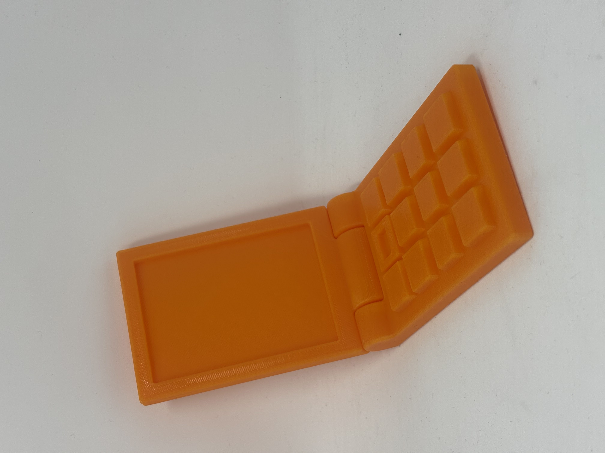
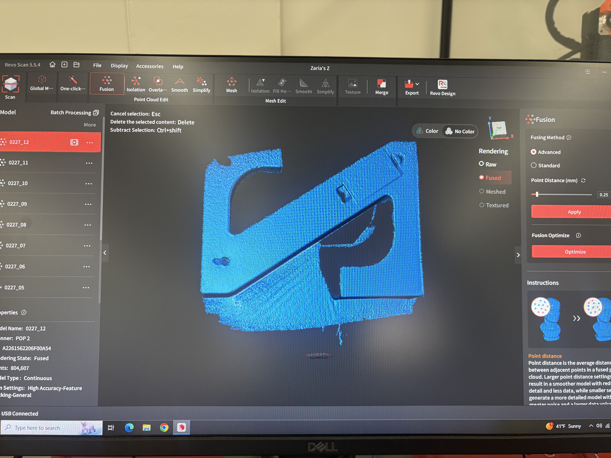
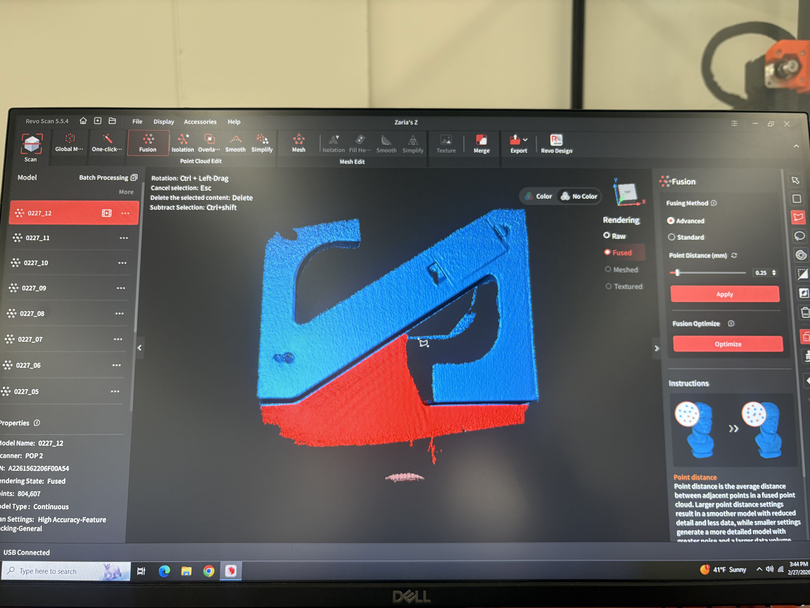
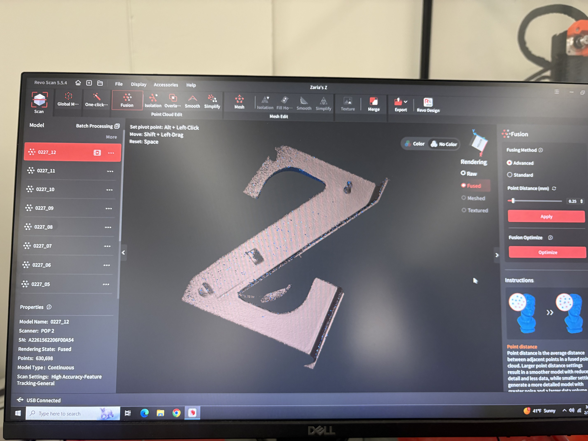
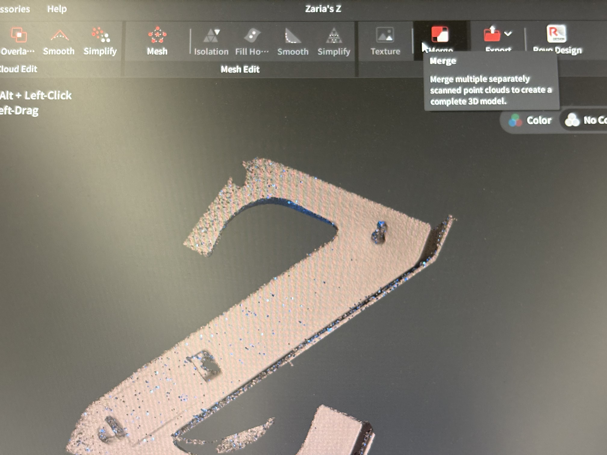
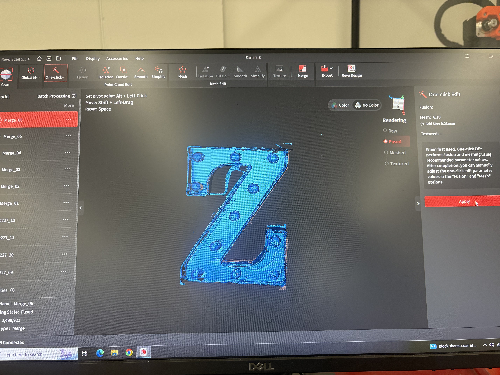

<div class="textcontainer">
<p class="margin"> </p>
<h3><strong>Week 5: 3D Design & Printing</strong></h3>
<h4>Assignment: Model and 3D print something</h4>
<p> I found print in place tutorials online and mainly followed this tutorial to create my base: https://youtu.be/wFejArLliwg?si=xMm3Hq1CEgi-aQ_d </p>
<p> After I completed the hinge joint, I modified the print to resemble a flip phone:</p>
<p> Saved the file as an STL </p>
<p> Exported the file to Prusa Slicer, chose the appropriate nozel & printer </p>
<p> Print </p>
<p></p>
<p> Here is the STL file from Fusion360: </p>
<a href="zferguson_flipphone v1.stl" download="Flip Phone STL file">
Flip Phone STL file
</a>
<p> Here is the gcode file from PrusaSlicer: </p>
<a href="zferguson_flipphone v1_0.4n_0.2mm_PLA_MK4S_1h14m.bgcode" download="Flip Phone gcode file">
Flip Phone gcode file
</a>
<h4>Assignment: Scan Something</h4>
<p> For this exercise, I used the REVO Ssoftware to scan my Z. I placed my object on a black surface and positioned the scanner to get the desired part in frame. I did multiple passes scanning the front, back and sides of the Z at different orientations. After the scans were complete I fused each scan. One difficulty I encountered was capturing some of the overlapping sections as the Z is symmetrical. To help rectify this, when I got to the process of merging the files, I merged them in a different order than when the scans were taken. That way the software could understand the shape and provide the correct orientation once I merged successive scans. After merging the scans, I created a mesh with the resulting merge and exported the file as an STL file. Below is the final result: </p>
<p> Here are pictures from the process REVO software: </p>
<div style = "display: flex;">
<p></p>
<p></p>
</div>
<p> Pictures of one of the scans before I fused it. The red area is the excess that I removed from the scan using the polygon tool </p>
<div style = "display: flex;">
<p></p>
<p></p>
</div>
Picture of the fused scan
<div style = "display: flex;">
<p></p>
</div>
My final merge at the end!
<h4>Final Project Development</h4>
<p> Bill of Materials </p>
<p> Project Timeline </p>
</div>